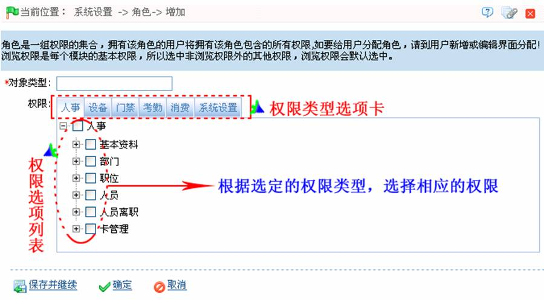
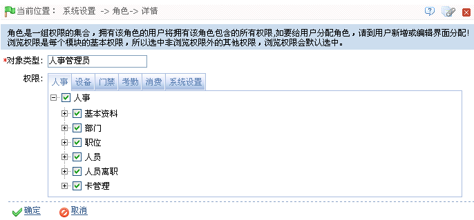
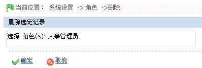

9.1 系统用户管理
9.1.1 角色管理
在日常使用过程中，超级用户需要分配一些具有不同权限级别的新用户，为避免对每个用户单独设置，可以在角色管理中设置一类具有一定权限的角色，在新增用户时直接将合适的角色分配给用户即可。包括人事、设备、门禁、考勤、消费、系统设置六大功能模块的使用权限。系统默认的超级用户拥有全部权限，超级用户可按需要分配新用户并设置相应角色（权限）。
-
 新增角色
新增角色
1、单击【系统设置】 【角色】
【角色】 【新增】，进入新增角色页面：
【新增】，进入新增角色页面：

 提示：操作前请仔细阅读页面中的操作提示。
提示：操作前请仔细阅读页面中的操作提示。
对象类型：输入对象类型，即角色名称。（如人事管理员、设备管理员等）
权限：包括人事、设备、门禁、考勤、消费、系统设置六大块权限设置。在每个“权限类型选项卡”下的操作权限选择列表中，单击操作权限前面的选择框打钩选中该权限；也可单击列表中的最高级权限，选中其下的所有子权限。如单击图中的最高权限人事，则其下的子权限，包括基本资料、部门、职位、人员、人员离职、卡管理都将被选中。
2、设置完成后，单击【确定】按钮，保存并返回角色页面，此时角色列表中将显示刚新增的角色信息。
-
编辑角色
1、在角色列表中，单击“对象类型”或单击角色所在行的“相关操作”下的【编辑】按钮，进入编辑角色页面：

2、根据需要修改各参数设置（可参见新增角色中的参数设置方法），修改完成后，单击【确定】按钮，保存修改后的角色信息。
-
删除角色
1、在角色列表中，单击选中需删除的角色，然后单击角色列表上方的【删除】按钮，或直接单击角色所在行的“相关操作”下的【删除】按钮，进入删除角色页面：

2、单击【确定】按钮，确认并删除被选定的角色。